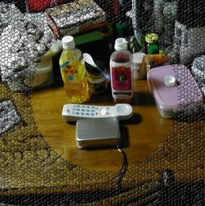

先日飲んだ FAUCHON PARIS のアップルティー(ペットボトル入り)の香りがオシャレに想えたです。

ＦAUCHON PARIS APPLE TEA （フォション (パリ) アップル・ティー）を飲みました。とても香りが良くおいしかったです。私はアップルミルクティーなども好きなのですが、ふと、電話が鳴っているときに香りがするのもオシャレかなぁと思いこのような写真を取りました。 まったく関係ないのですが、くるみのようなバターをコーヒーに溶かすと、表面に動的数学文様のようなものが見えて「フムフム」なんて思いました。 Tips：GIMPを使って効果を入れています。 <sub>宣伝用 SPAM (テレビ Monty Python などに登場) として《忘却からの帰還：創造論者が使ってはいけないVapor Canopy》様およびその他様に Trackback をお送りしました。セルフトラックバックも痛しました。</sub> 更新：2007-02-22 初公開：2007年02月22日 09:59:20 最新版：2007年02月22日 10:50:08
Trackbacks: 《愛川ゆず季 無料セクシーまるみえ衝撃画像集Part1》 from 愛川ゆず季 無料衝撃セクシー画像Part1 【プロフィール】 ○芸名 愛川ゆず季 ○読み方 アイカワ ユズキ ○誕生日 1983年5月16日 ○星座 おうし座 ○出身地 愛媛 ○性別 女 ○血液型 B型 ○身長 157cm ○スリーサイズ B100 W60 H89 ○趣味・特技 クラシックバレエ テコンドー バレーボール 水泳 ... 受信： 2007-02-28 21:44:23 (JST) 《暮らし》 from は スポーツ 武装闘争継続 司法関係者によると 海兵隊 受信： 2007-03-19 10:59:34 (JST) 《広末涼子 離婚へ！！エッチなシーン ストーカーによるパンチラ映像 流出映像！！》 from 広末涼子 離婚へ！！エッチなシーン ストーカーによるパンチラ映像 流出映像！！ 広末涼子 離婚へ！！エッチなシーン ストーカーによるパンチラ映像 流出映像！！ 広末涼子が離婚へ！！エッチなシーン・ストーカーによるパンチラ映像・流出映像大公開！！ 4年前にできちゃった結婚をしてからというもの、常に破局説が付きまとってきた広末涼子(26)だが、... 受信： 2007-06-06 12:58:02 (JST) 《恋のから騒ぎ１３期生がデリヘル嬢！！その映像と本人の衝撃告白！！》 from 恋のから騒ぎ１３期生がデリヘル嬢！！その映像と本人の衝撃告白！！ 恋のから騒ぎ１３期生がデリヘル嬢！！その映像と本人の衝撃告白！！ 恋のから騒ぎ１３期生がデリヘル嬢！！その映像と本人の衝撃告白大公開！！今週発売のフラッシュに、恋から出身のデリヘル嬢がいるという記事が載っています。 写真を見ても顔全部がモザイクに... 受信： 2007-06-27 11:40:02 (JST) 《エビちゃん（蛯原友里） 海外エステでありえない盗撮をされています！しかも双子の妹と！》 from エビちゃん（蛯原友里） 海外エステでありえない盗撮をされています！しかも双子の妹と！ エビちゃん（蛯原友里） 海外エステでありえない盗撮をされています！しかも双子の妹と！ エビちゃんこと蛯原友里。今やドラマでも大活躍ですが、やはりモデルさん。エステ通いはあたり前。（おそらく）海外のエステでしかり盗撮されてます。 ■... 受信： 2007-06-30 15:27:42 (JST) Comments: ■ 華麗なる一族のあらすじとネタバレ そして、ここから華麗なる一族のネタバレです 華麗なる一族で木村拓也は自殺します。華麗なる一族 のオープニングからもわかるように。 ちなみに、 木村拓也あの長い銃で自殺します。 華麗なる○族の結末 http://ameblo.jp/suneo070225/ 投稿: ■ 華麗なる一族のあらすじとネタバレ | 2007-02-26 13:28:12 (JST)
Links: ＦAUCHON PARIS: http://www.takashimaya.co.jp/store/others/gourmet/fauchon/index.html GIMP: http://www.gimp.org/ 忘却からの帰還：創造論者が使ってはいけないVapor Canopy: http://transact.seesaa.net/article/34370602.html その他: http://sentotihiro.blog.ocn.ne.jp/hibiarata/2007/02/post_e054.html セルフトラックバック: http://jrf.cocolog-nifty.com/religion/2006/06/post.html ■ 華麗なる一族のあらすじとネタバレ: http://ameblo.jp/suneo070225/
後方参照 (1 件)
- URL参照 某ペットボトル紅茶を飲む。苦い。ヒドい味。が、こういうものが飲みたかった！これは… 2009年11月28日